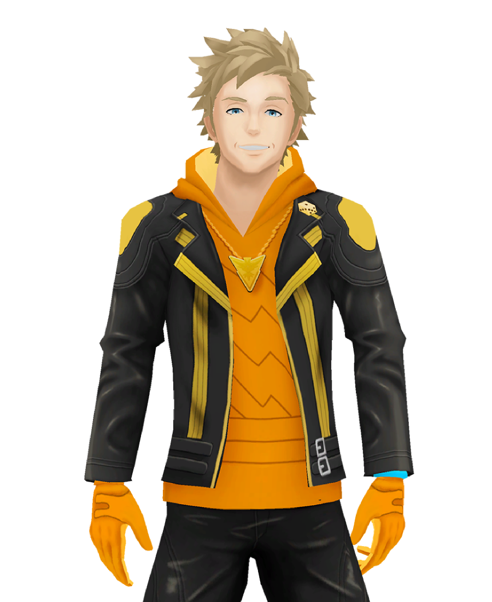
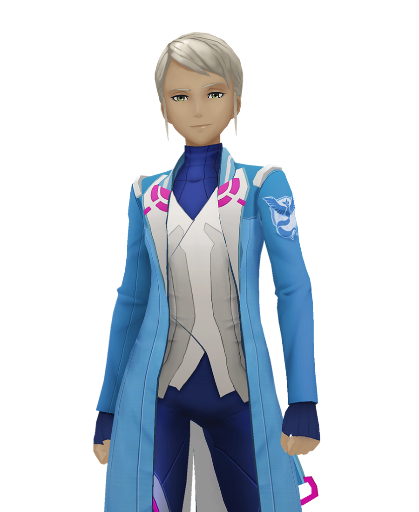
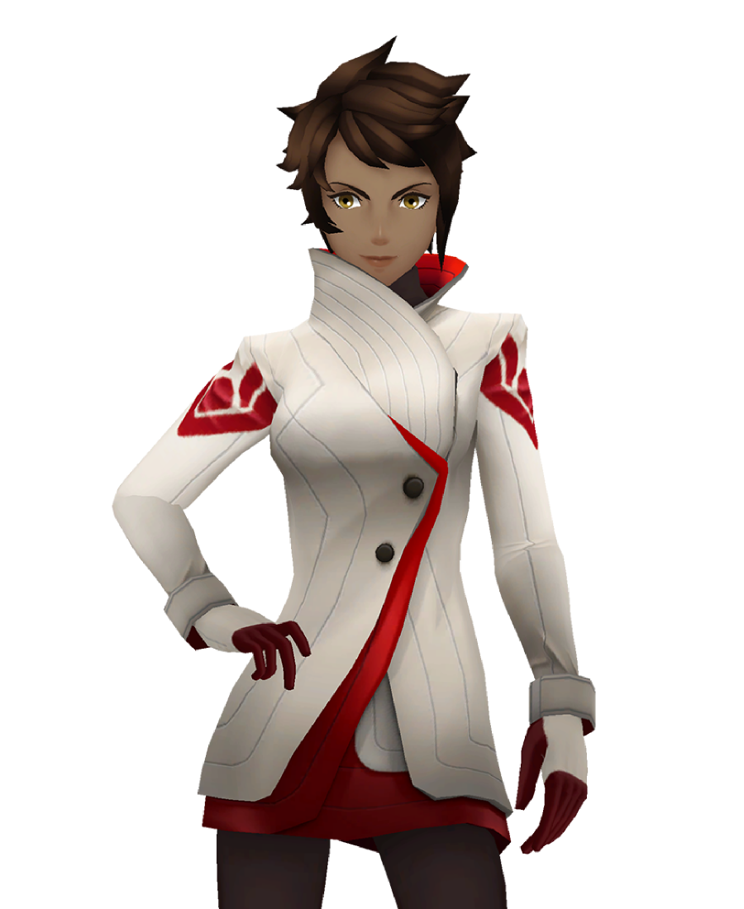

Team Instinct
Liderem Teamu Instinct jest Spark. Instynkt bada wylęganie się Pokémona z jaj. Team Instinct wierzy, że Pokémon ma świetną intuicję i działa zgodnie z ich instynktami z powodu tego, jak się wykluwają. Team Instinct jest reprezentowany przez legendarnego ptaka Zapdos, ponieważ jest to emblemat drużyny, a Spark ma Zapdos w swojej drużynie pokémonów. Team Instinct często pokazuje, że specjalizuje się w pokémonach typu elektrycznego, co widać po ich przywódcy Sparku, który jest trenerem typu elektrycznego. Żółty to charakterystyczny kolor Instinct, który nazywa się nawet Żółtym Drużyną. Team Instinct ceni intuicję i optymizm oraz zachęca swoich członków do podążania za własnym instynktem. Chcą odkryć intuicję pokémona.

Team Mystic
Liderem Teamu Instinct jest Blanche. Mystic bada, dlaczego pokémony ewoluują i cały proces ewolucji. Trenerzy Team Mystic uważają, że pokémony są mądrzejsze od ludzi. Team Mystic jest reprezentowany przez legendarnego ptaka Articuno, ponieważ jest to emblemat drużyny, a Blanche ma Articuno w swojej drużynie pokémonów. Często pokazuje się, że Team Mystic specjalizuje się w pokémonach typu lodowego, co widać po ich liderze Blanche, który jest trenerem typu lodowego. Niebieski to charakterystyczny kolor Mystic, a nawet nazywa się ich Blue Team. Zespół Mystic bardzo ceni mądrość i spokojny, analityczny charakter. Chcą zrozumieć, dlaczego pokémony ewoluują i jak przebiega ten proces.

Team Valor
Liderem Teamu Instinct jest Candela. Valor bada moc i siłę Pokémonów. Trenerzy Drużyny Valor wierzą, że Pokémony są silniejsze i bardziej serdeczne niż ludzie, ponieważ trenują, aby zwiększyć moc Pokémonów w poszukiwaniu prawdziwej siły. Drużynę Valor reprezentuje legendarny ptak Moltres, ponieważ jest to emblemat drużyny, a Candela ma Moltresa w swojej drużynie pokémonów. Zespół Valor często specjalizuje się w Pokémonach typu ognistego, co widać po ich przywódcy Candela, który jest trenerem typu ognistego. Czerwony to charakterystyczny kolor Valora, który nazywa się nawet Czerwonym Drużyną. Team Valor bardzo ceni prawdziwą moc i polega na sile w bitwie. Chcą odkryć prawdziwą, naturalną moc Pokémona.
